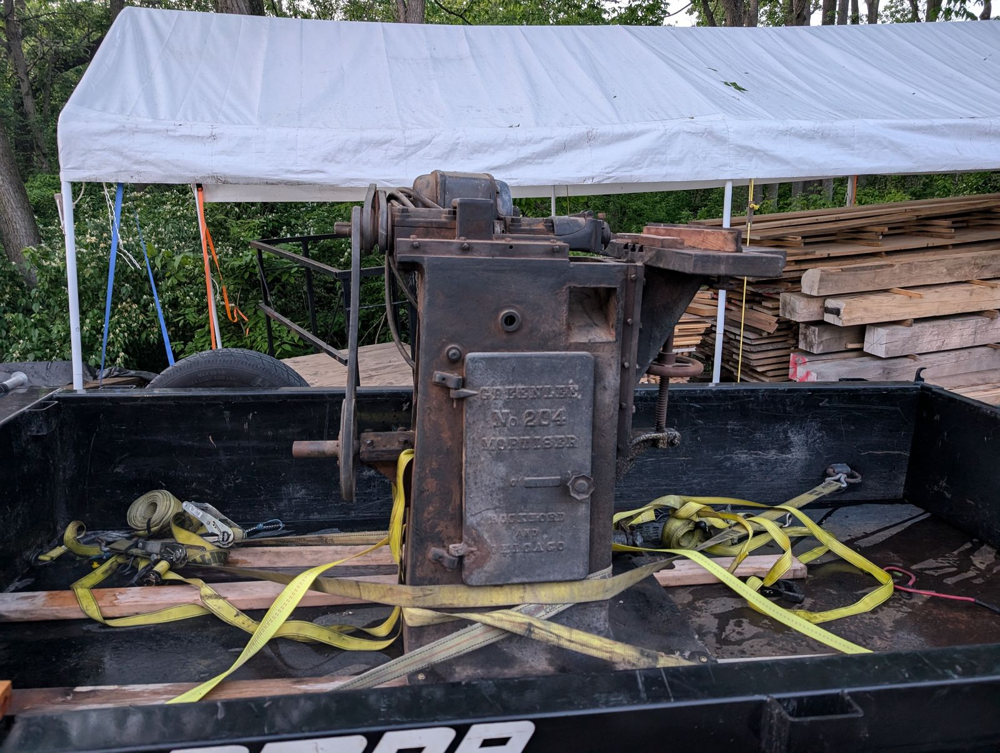
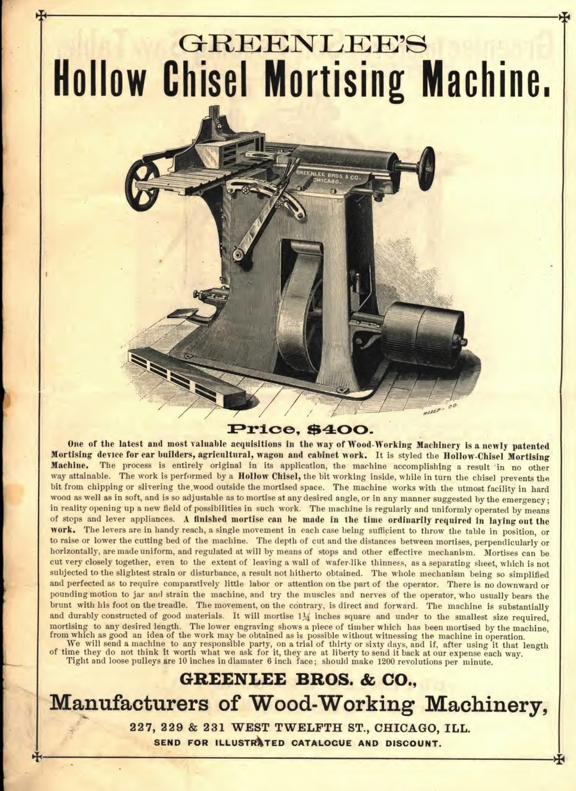
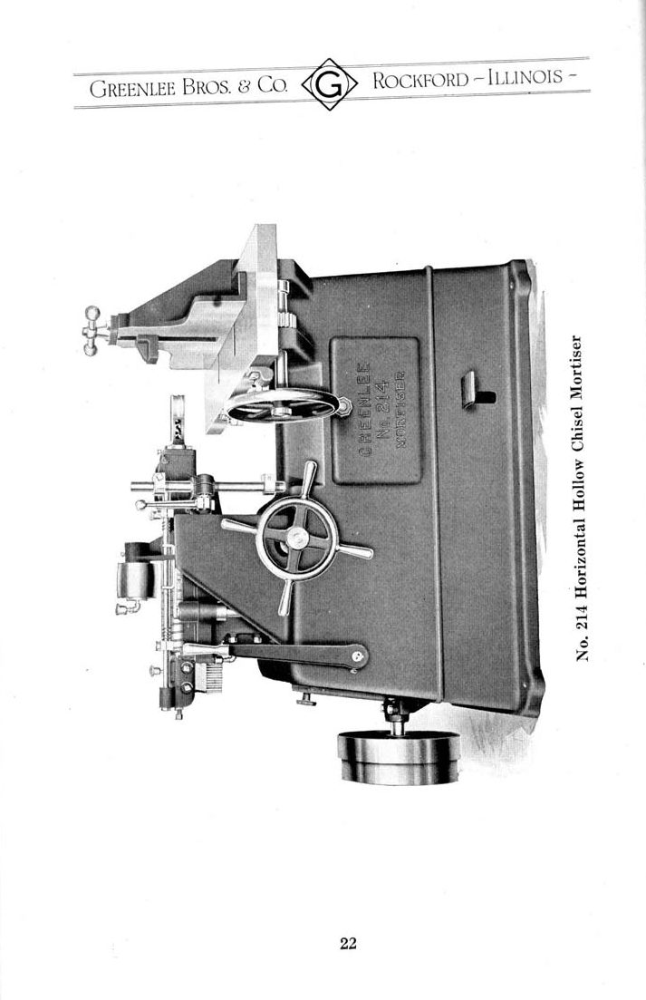

No. 204 Horizontal Mortiser
Slot mortising for doors & furniture · Chicago & Rockford · c. 1905

The machine
The mortise is the slot half of the oldest joint in woodworking, and cutting one cleanly by hand is slow, skilled work. A horizontal mortiser turns the job on its side: the workpiece is clamped to a table and the cutter comes in from the edge, levered by the operator with a machinist’s control over depth and length. Door stiles, furniture rails, window frames — anything that needed a deep, accurate slot came to a machine like this.
This example
The No. 204 was built around 1905, in the short, interesting window when Greenlee Bros. & Co. was a company in motion. The firm had outgrown Chicago and in 1904 moved its works to Rockford, Illinois; machines of these transition years carry the marks of both cities. That makes the 204 a company history you can put your hands on — iron poured while the wagons were, almost literally, still being loaded.
Alongside the No. 604 it represents the hand-and-lever generation of the collection: machines from before high-speed spindles, when accuracy came from mass, geometry, and an operator who knew what a tight joint felt like.
Through the Catalogs
The No. 204 itself appears in no surviving catalog — but the horizontal mortiser was a long Greenlee line, bracketed here by an 1880s Chicago ancestor and its 1920s Rockford successor.


Every frame links to the full publication in the Paper Archive — scans courtesy of VintageMachinery.org.